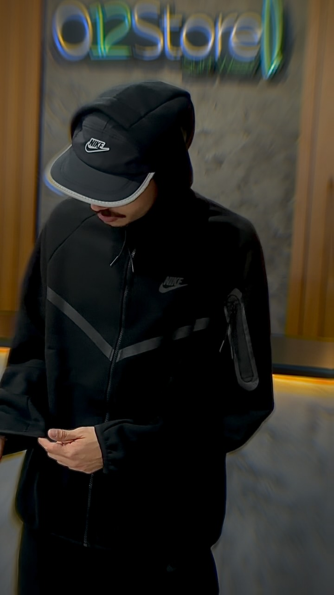
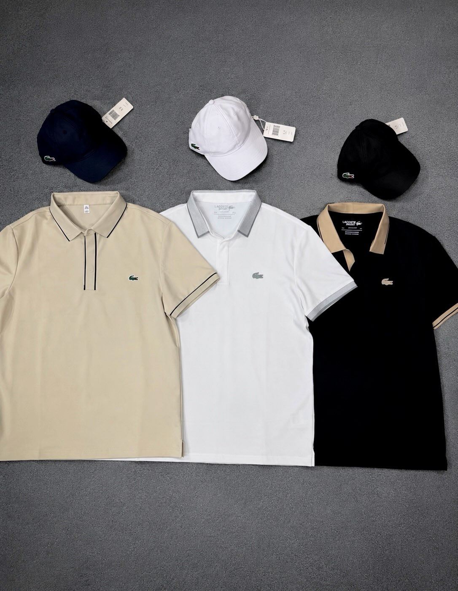
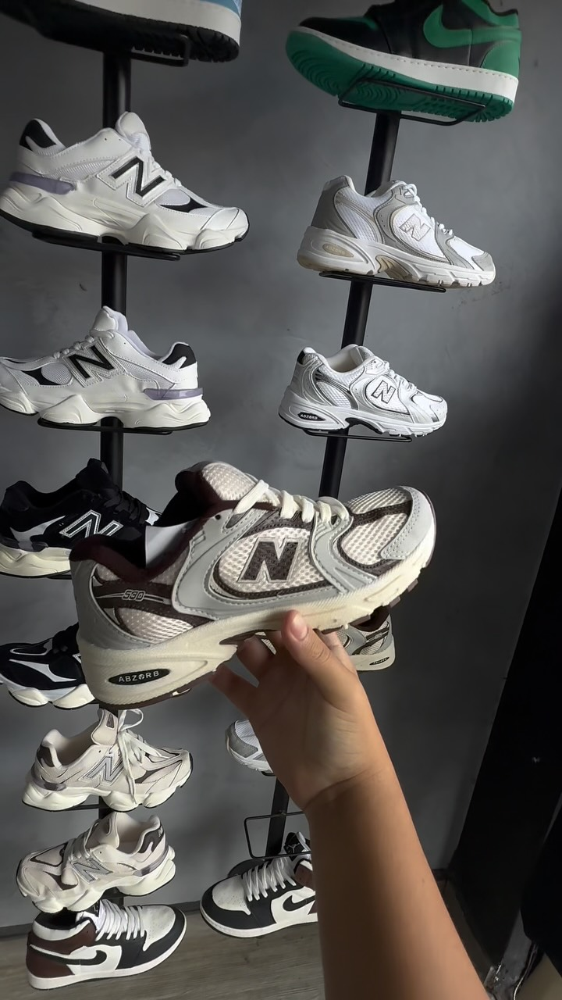
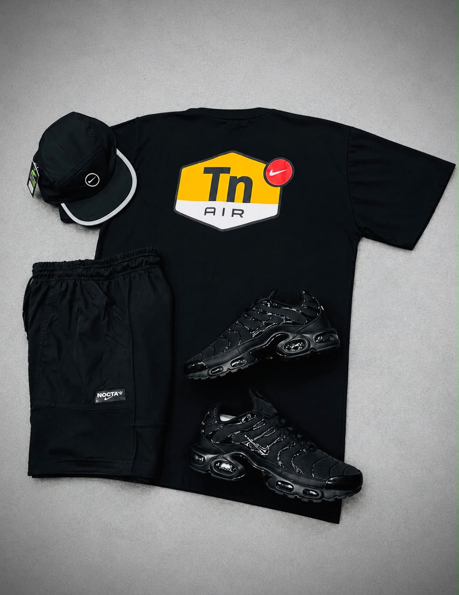
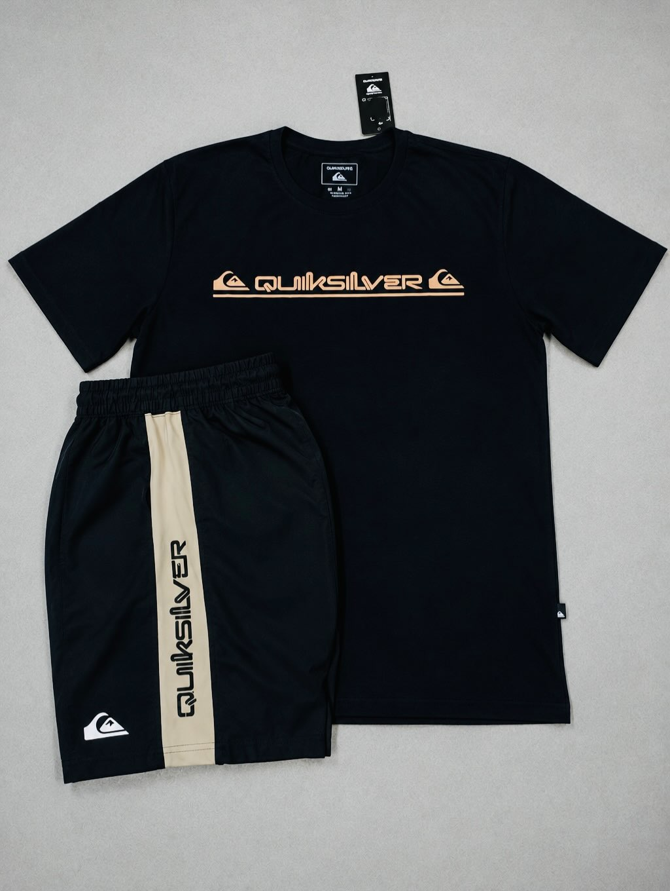

01 · Editorial

Campanha e narrativa
Uma abertura visual para apresentar a identidade da 012.
Uma vitrine no ritmo da 012
Uma proposta de catálogo complementar para organizar referências publicadas pela 012 e levar a conversa para o WhatsApp com a peça que chamou atenção.
Fotos de referência · estoque a confirmar

Uma abertura visual para apresentar a identidade da 012.


Filtros e detalhes para encontrar uma referência e perguntar por ela.


Duas referências diferentes; escolha o que curtiu e consulte a loja.
Três estruturas, uma identidade
A pessoa escolhe como explorar: uma entrada com narrativa, uma busca objetiva por categoria ou uma apresentação visual de referências.
Um começo melhor para a conversa
A seleção prepara uma mensagem no WhatsApp. Preço, variações e disponibilidade ficam com a equipe; não há estoque integrado.